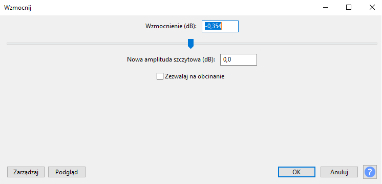

Efekt wzmocnij
Efekt wzmocnij w programie Audacity zmienia głośność wybranej ścieżki audio. Wzmocnienie zawsze zachowuje względną głośność ścieżek i kanałów. Można również użyć pola "Wzmocnienie (dB)" w Wzmocnij jako szybkie sprawdzenie bieżącego poziomu szczytowego wyboru.
Wzmocnienie (db)
Wpisz wartość wzmocnienia, które chcesz zastosować lub przeciągnij suwak. Wartości dodatnie powodują, że dźwięk jest głośniejszy, a wartości ujemne cichszy. Podczas pisania, pole wprowadzania nowej amplitudy szczytowej będzie aktualizowane.
Nowa amplituda szczytowa (dB)
Wpisz wartość, którą chcesz dla nowej amplitudy szczytowej toru. W trakcie pisania pole wprowadzania Wzmocnienie zostanie zaktualizowane.
Zezwalaj na obcinanie
Jeśli to pole nie jest zaznaczone, a próbujesz wprowadzić wartość wzmocnienia, która spowoduje, że nowa amplituda szczytowa będzie większa niż 0 dB, przycisk OK stanie się nieaktywny. Zapobiegnie to stosowaniu zbyt dużego wzmocnienia. Jeśli to pole jest zaznaczone, możesz zastosować tyle wzmocnienia, ile chcesz, prawdopodobnie tworząc strasznie zniekształcony dźwięk.